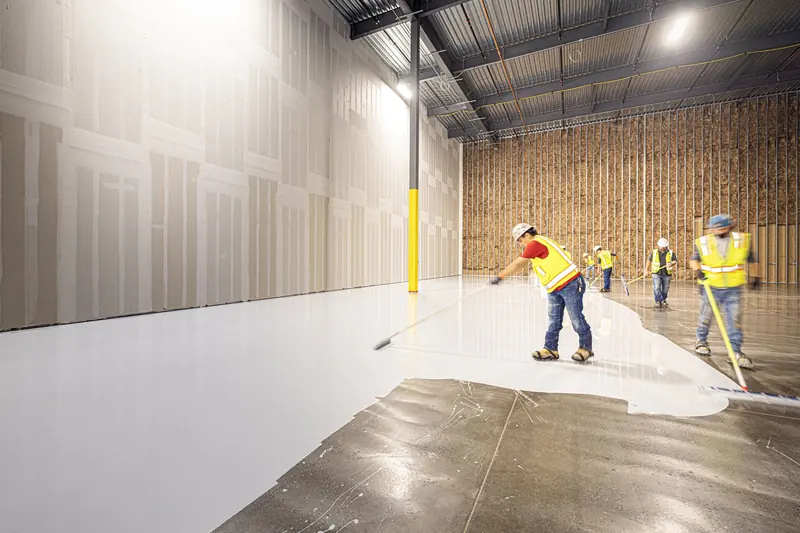

Revestimento de proteção química para bacias de contenção
Para bacias de contenção e áreas onde o piso recebe produto agressivo.

O problema
Concreto é poroso e alcalino. Produto ácido ataca a pasta de cimento; produto alcalino concentrado e solvente também encontram caminho pelos poros. O que se vê na superfície (mancha, desagregação, agregado exposto) costuma ser a parte visível de um ataque que já desceu alguns milímetros.
Numa bacia de contenção o papel do piso muda: ele não é só superfície de trabalho, é a barreira que precisa segurar o produto até a remoção. Uma bacia que absorve o que deveria conter deixa de cumprir a função para a qual foi construída.
O que o sistema faz
Proteção para bacias de contenção e áreas com produto agressivo.
O revestimento fecha a porosidade do concreto e interpõe uma camada quimicamente estável entre o produto e o substrato. O que antes penetrava passa a ficar na superfície, onde pode ser recolhido.
A escolha da resina depende do produto, da concentração e do tempo que ele fica em contato com o piso: a mesma área pode exigir sistemas diferentes se o que derrama muda. Por isso a especificação parte da relação de produtos manipulados, não do tamanho da área.